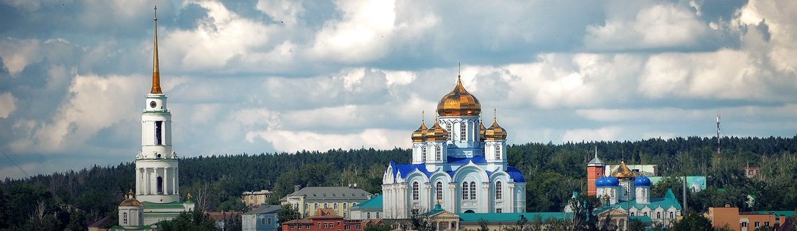
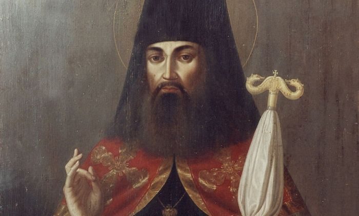

WhatsApp
WhatsApp 

Оплатить можно заранее с помощью Яндекс.Денег или банковского перевода, а также на месте наличными.

Акции
За каждую поездку вам начисляется +1% скидки (до 10%).
Не стесняйтесь приводить своих близких и знакомых — если вы заранее забронируете место на 2+ человек, то получите скидку в 10%!
О Добропуте
За последние четыре года несколько сотен человек вместе с нами посетили самые главные места русского православия.
Мы также работаем с церковными приходами и организованными группами.
Отзывы о поездках
Вы можете посмотреть отчеты о последних поездках на наших страницах в социальных сетях:
Мощи Тихона Задонского
Икона Владимирской Богоматери
Святой источник
Задонский Рождество-Богородицкий монастырь начался с переселения двух схимонахов из Сретенского монастыря. Вместе с собой они принесли копию Владимирской иконы Богоматери, сегодня почитаемой чудотворной. Известность обитель преобритает благодаря святителю Тихону Задонскому — одному из крупнейших русских богословов и подвижников 18 века. Воронежская епархия в его время находилась в нравственном и духовном упадке — народ продолжал праздновать языческие праздники, а священство было малообразованным. Будучи епископом, он особое внимание уделял духовному образованию и воспитанию будущих пастырей церкви, запретил телесные наказания и придал строгости богослужению.

святитель Тихон Задонский
В Задонский монастырь святитель Тихон переехал после сложения с себя епископских полномочий по состоянию здоровья. Здесь он посвятил себя строгой аскетической жизни, приобрел любовь и почитание у народа, с которым находился в постоянном общении и которому оказывал духовную поддержку и всю доступную ему материальную помощь.
Ближайшая поездка
∙ 00 марта 2017 пятница ∙
1 день
15:00 отъезд
м. Лермонтовский-проспект
09:00 прибытие и размещение
16:00 вечернее богослужение
18:00 трапеза в монастыре
19:00 отдых
2 день
07:00 молитва и акафест
08:00 Божественная литургия
10:30 трапеза
12:00 отъезд
10:00 возвращение в Москву
м. Лермонтовский-проспект
Цена
0000₽
+000₽
Проживание и питание
Как оплатить поездку?
Яндекс.Деньги
Переведите на кошелек 410014923846938 сумму 0000₽ (1 человек) и в комментарии укажите свой телефонный номер, ФИО и место поездки.
Банковский счет
Переведите на карту 4276 3800 3705 7606 сумму 0000₽ (1 человек) и отправьте смс на номер +7(909)907-15-59 с номером перевода, ФИО и местом поездки.
Наличными деньгами
Вы также можете оплатить поездку наличными перед отправлением, предварительно связавшись с нами по телефону +7(909)907-15-59.
Расписания поездок
К сожалению, по данному маршруту в ближайшее время нет поездок.
Но зато есть другие! Вы можете ознакомиться с ними ниже.
о. Владимир Головин
24-27 марта
Милостиво-Богородцкий м.
5 апреля
Пасха в Дивеево
15-16 апреля
Толгский монастырь
29-30 апреля
Оптина Пустынь
6-7 мая
Псково-Печорский м.
26-28 мая
Акции
За каждую поездку вам начисляется +1% скидки (до 10%).
Не стесняйтесь приводить своих близких и знакомых — если вы заранее забронируете место на 2+ человек, то получите скидку в 10%!
О Добропуте
За последние 4 года несколько сотен человек вместе с нами посетили самые главные места русского православия.
Мы также работаем с церковными приходами и организованными группами.
Отзывы о поездках
Вы можете посмотреть отчеты о последних поездках на наших страницах в социальных сетях: